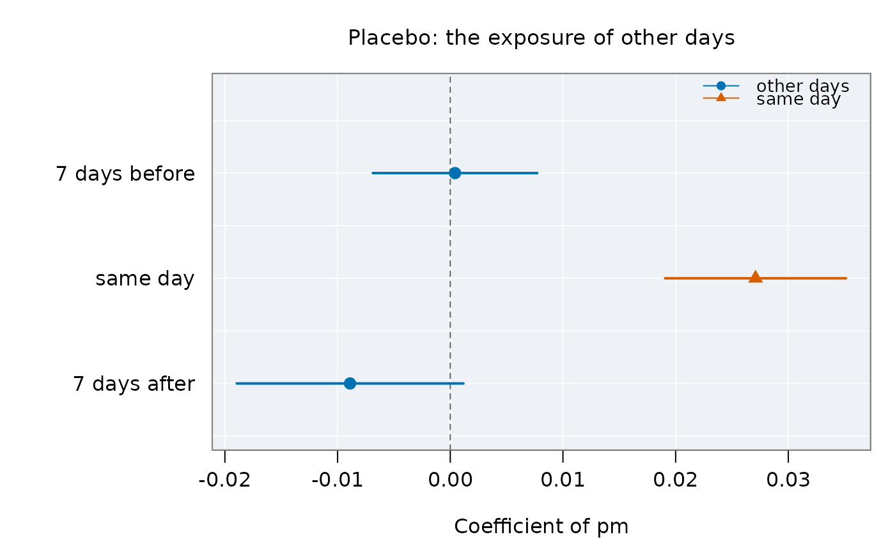

Refits an estimator with the exposure taken from other days of the same
place, leads and lags in one call, and returns one table of
coefficients, the same day first. This is the placebo of Bondy, Roth
and Sager (2020, table A1 and footnote 27: 7, 31 and 365 days back and
forward) and of Herrnstadt, Heyes, Muehlegger and Saberian (2019, table
9: 100 days); shifts = c(-365, -100, -31, -7, 7, 31, 100, 365) runs
both.
Usage
plcday(
data,
var,
unit,
day,
shifts = c(-365, -31, -7, 7, 31, 365),
est = ppmlfe,
with = NULL,
shift = c("both", "x", "z"),
...
)
# S3 method for class 'plcday'
print(x, ...)
# S3 method for class 'plcday'
summary(object, ...)
# S3 method for class 'plcday'
plot(x, ..., main = NULL, col = NULL, pal = NULL)Arguments
- data
A data frame, one row per place and day.
- var
The name of the exposure column.
- unit, day
The names of the place and day columns; days are numbers or dates (one per unit at most).
- shifts
The leads and lags in days, whole numbers other than 0; negative is the past.
- est
The estimator:
ppmlfe(),ivfe()orppmlcf(), or another function with adataargument returning a list withcoefholding a row whosetermisvar.- with
NULLor the names of other columns to move (the instruments).- shift
"both","x"or"z": what is moved.- ...
The other arguments of
est(y,x,fe, ...). Forplot(), passed to the base-graphics call.- object, x
An object of class
plcday(for the methods).- main
NULL(a default title) or one string.- col
NULL(the palette) or colours.- pal
NULL(the session palette, seeplotopt()) or a palette name forblpal().
Value
An object of class plcday, a list: tab, a data frame with
one row per shift, 0 (the same day) first (shift, est, se,
lo, hi, p, n); var, shift. summary() returns tab.
Details
What it can show: if pollution on irrelevant days predicts crime as well as pollution on the day does, the estimate is picking up something slow (a season, a trend, a place that is polluted and violent for other reasons) that the fixed effects did not remove. What it cannot show: a cause on the same day that moves with the exposure (a heat wave, an event) passes this test, and so does a wrong instrument; a null placebo is necessary for, not proof of, a causal reading. Shifted exposure is correlated with same-day exposure when pollution persists, so a small placebo coefficient is expected even then.
The shift is by the day's value: row (place, day) gets the value of
(place, day + shift) and is dropped when that row does not exist;
n reports the rows left. For the instrumental-variable estimators the
papers do not say what is moved: shift = "both" (the default) moves
the exposure var and the columns in with (the instruments) together,
a placebo of the whole design on another day; "x" moves the exposure
alone and keeps the same-day instruments; "z" moves the instruments
alone (a reduced-form placebo).
plot() draws the coefficient of each shift with its interval,
from the earliest day to the latest, the same day in its own colour
and shape, and returns the rows drawn.
References
Bondy, M., Roth, S. and Sager, L. (2020). Crime is in the air: the contemporaneous relationship between air pollution and crime. Journal of the Association of Environmental and Resource Economists, 7(3), 555-585. doi:10.1086/707127
Herrnstadt, E., Heyes, A., Muehlegger, E. and Saberian, S. (2019). Air pollution as a cause of violent crime. Working paper.
Examples
# simulated: crime responds to same-day pollution only
set.seed(4)
d <- expand.grid(day = 1:80, area = 1:12)
d$pm <- rnorm(nrow(d), 20, 5)
d$crimes <- rpois(nrow(d), exp(0.5 + 0.03 * d$pm))
p <- plcday(d, "pm", "area", "day", shifts = c(-7, 7), y = "crimes",
x = "pm", fe = c("area", "day"))
p
#> plcday: the coefficient of pm with values of other days (shift 0 is the same day; moved: both)
#> shift est se lo hi p n
#> 0 0.0270936 0.004098 0.019062 0.035125 3.806e-11 960
#> -7 0.0004221 0.003722 -0.006873 0.007717 9.097e-01 876
#> 7 -0.0088918 0.005132 -0.018950 0.001167 8.316e-02 876
plot(p)
